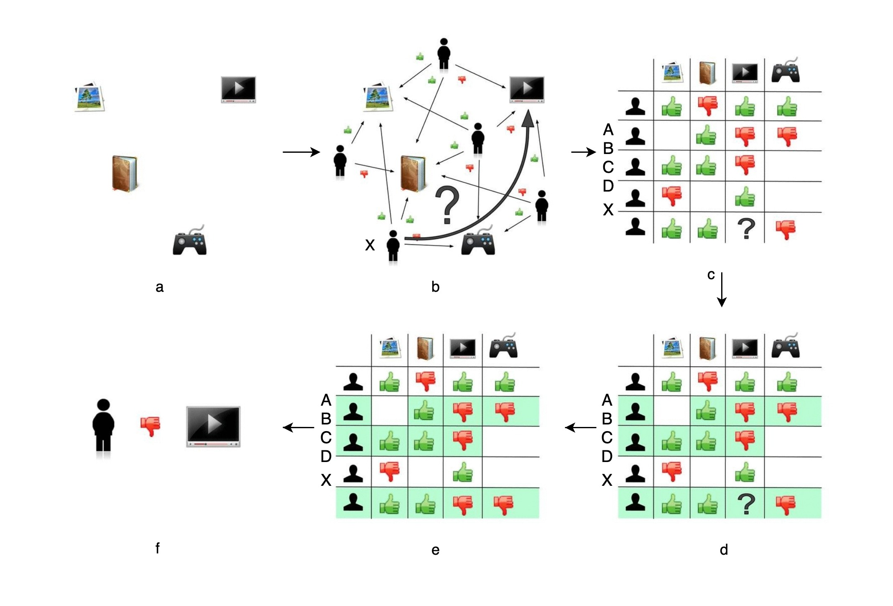
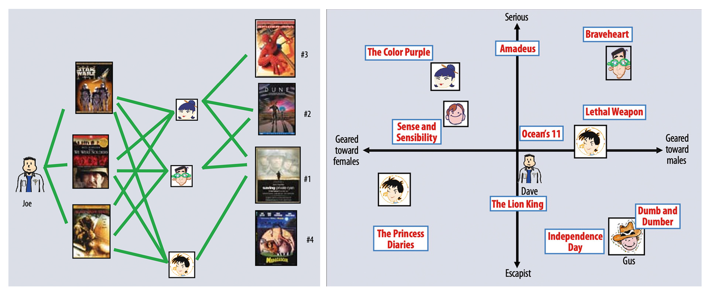
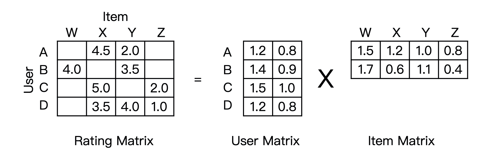

经典推荐模型¶
协同过滤¶
用户行为数据是推荐系统最常用，也是最关键的数据。用户的潜在兴趣、用户对物品的评价好坏的反映在用户的行为历史中。
协同过滤是完全依赖用户和物品之间行为关系的推荐算法。协同过滤全过程分为6步，可示意如下：

各阶段的解释：
a. 电商网站商品库共有4件商品，游戏机、小说、杂志和电视机。
b. 现在用户X访问了电商网站，推荐系统需决定是否推荐电视机给用户X。
c. 可用的数据有用户对商品的历史评价数据，绿色“赞”代表好评（值设为1），红色“踩”代表差评（值设为-1），“没有数据”值设为0。我们把历史数据转换成矩阵的形式，即是“共现矩阵”。
d. 推荐问题就转化成了预测矩阵中问号元素的值得问题。
e. 在协同过滤算法中，推荐的原理是让用户考虑与自己兴趣相似的用户的意见，因此，我们需找到与用户X兴趣最相似的n个用户（n是一个超参数，需预先指定好）。
f. 综合这n个相似用户对📺的评价，预测用户对📺的评价。
计算用户相似度¶
关键是最后两步，如何计算用户相似度和综合相似用户的评价。
这里用户行为被表示成了共现矩阵中的行向量，因此可以利用计算向量相似度的办法来计算用户相似度，比如说最常用的余弦相似度：
用户评分的预测¶
预测用户 \(u\) 对商品 \(p\) 评分 \(r_{u,p}\) 最常用的方式是，利用相似用户评价的加权（权重为相似度）平均：
这里 \(S\) 为用户 \(u\) 最相似的n个用户的集合，\(sim(u, s)\)为用户 \(u\) 和用户 \(s\) 的相似度。
矩阵分解¶
虽然协同过滤是最经典的推荐算法，但我们还是可以轻松找到它的缺点，那就是共现矩阵往往非常稀疏，在用户历史行为很少的情况下，寻找相似用户的过程并不准确。
Netflix对协同过滤算法进行了改进，提出了矩阵分解算法（左为协同过滤、右为矩阵分解）：

矩阵分解算法为每一位用户、每一个视频生成了一个隐向量，距离相近的用户和视频表明兴趣特点接近（这里的距离相近具体是指向量的內积大），比如说根据右图我们认为Dave喜欢影片《The lion king》和《Ocean’s 11》。
这些隐向量是怎么生成的呢？事实上生成隐向量的过程就是分解共现矩阵的过程：

从形式上来看，矩阵分解就是把一个\(m\times{n}\)的共现矩阵，分解成为的\(m\times{k}\)用户矩阵和\({k\times{n}}\)的物品矩阵的乘积（ \(k\) 是隐向量的维度，一般较小，由我们事先指定）。
也就是说，矩阵分解的过程就是使用用户向量\(v_{u}\)和物品向量\(w_{p}\)的点积逼近用户\(u\)对物品\(p\)的评分\(r_{u,p}\)的过程，从而：
用户和视频距离相近 \(\Leftrightarrow \) 用户和视频內积大 \(\Leftrightarrow \) 我们预测此用户在此视频上的评分高
最后，共现矩阵的分解可以视为一个最优化问题：
可使用梯度下降法进行训练。